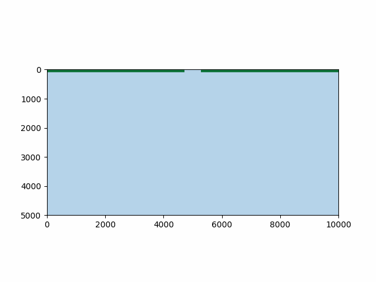

Make a simple gif movie¶
import numpy as np
import matplotlib.pyplot as plt
from matplotlib import animation
import deltametrics as dm
def update_field(i):
im.set_data(golf['eta'][i, :, :])
golf = dm.sample_data.golf()
time_idxs = np.arange(0, golf.shape[0]-1)
cmap, norm = dm.plot.cartographic_colormap(H_SL=0.0, h=4.5, n=1.0)
fig, ax = plt.subplots()
im = ax.imshow(
golf['eta'][0, :, :],
extent=golf.extent,
cmap=cmap, norm=norm
)
Then, make the animation with matplotlib’s FuncAnimation.
anim = animation.FuncAnimation(
fig, update_field,
frames=golf.shape[0]-1,
interval=20)
anim.save('simple_movie.gif', fps=30)
plt.show()
An view the gif:
